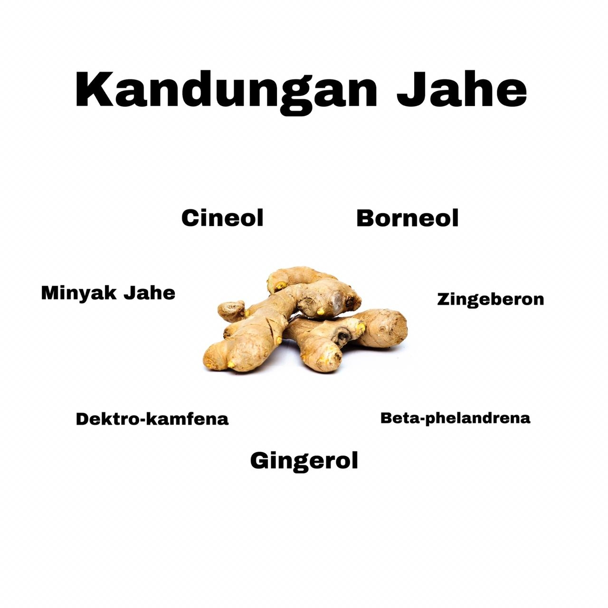

Asal Usul Jahe
Jahe merupakan tanaman obat berupa tumbuhan rimpang berbatang semu. Jahe berasal dari Asia Pasifik yang tersebar dari India sampai Cina. Oleh karena itu kedua bangsa ini disebut-sebut sebagai bangsa yang pertama kali memanfaatkan jahe terutama sebagai bahan minuman, bumbu masak dan obat-obatan tradisional.
Jenis - jenis Jahe

Jahe Putih bersar
Jahe Putih Kecil atau jahe emprit, yang memiliki ciri fisik berumbi agak pipih dengan ukuran yang lebih kecil dari pada umbi jahe gajah, namun memiliki rasa lebih tajam (pedas) dari pada jahe gajah., Jahe besar (jahe gajah)
Jahe Merah
Jahe merah yang memiliki ciri fisik berumbi kecil dengan warna merah, dan memiliki rasa yang sangat pedas.
Jahe Putih kecil (Jahe Emprit)
Jahe putih besar atau jahe gajah/jahe badak, yang memiliki ciri fisik berumbi besar serta gemuk dengan rasa yang tidak terlalu pedas.
Kandungan Jahe
Jahe memiliki kandungan gingerol, minyak jahe (zingeron), zingeberon, borneol, cineol, dextro-kamfena dan beta-phelandrena. Jahe juga mengandung minyak atsiri, berupa cairan kuning kehijauan dengan rasa pedas dan bau yang khas. Jahe mengandung atsiri sebanyak 48 sampai 60 persen, serat 7 sampai 11 persen, lemak 3 sampai 10 persen, air 12 sampai 18 persen dan kadar abu 8 sampai 9 persen.